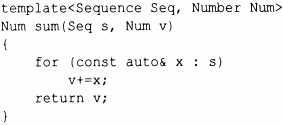
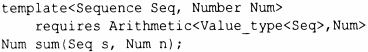
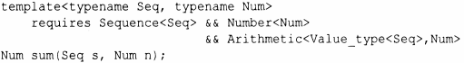
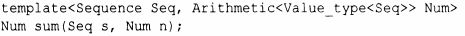
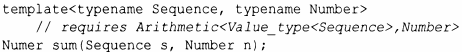

⇐7.2 Концепты (С++20) 7.2.2 Перегрузка на основе концептов⇒
Большинство аргументов шаблонов должны удовлетворять определенным требованиям для правильной компиляции шаблона и правильного функционирования сгенерированного кода. Таким образом, большинство шаблонов должны быть ограниченными шаблонами (§6.2.1). Ключевое слово t ypename является наименее ограничивающим, требующим только того, чтобы аргумент был типом. Обычно мы можем сделать большее. Рассмотрим функцию sum() еще раз:
Так код становится намного яснее. Как только мы определим, что означают понятия Sequence и NurnЬer, компилятор сможет отклонить неверные вызовы, просмотрев только интерфейс sum (),а не его реализацию. Это улучшит отчеты об ошибках.
Однако спецификация интерфейса sum () неполная: я "забыл" сказать, что мы должны иметь возможность суммировать элементы Sequence с NumЬer. Мы можем это сделать:
Value_type у последовательности представляет собой тип элементов в последовательности. Ari thmetic<X, У> - это концепт, указывающий, что мы можем выполнять арифметические вычисления с типами Х и У. Это спасает нас от случайных попыток вычисления sum() для vector<string> или vector<int*>, принимая при этом аргументы vector<int> и vector <complex<douЬle>>.
В этом примере нам понадобился только оператор +=, но для простоты и гибкости мы не должны слишком строго ограничивать наш шаблонный аргумент. В частности, мы можем когда-нибудь захотеть выразить sum () в терминах + и =, а не +=, и тогда мы будем рады, что использовали более общий концепт (в данном случае -Arithmetic), а не узкое требование "наличия+=".
Частичные спецификации, как в первой версии sum () с использованием концептов, могут быть очень полезными. Если спецификация не будет полной, некоторые ошибки не будут найдены до момента инстанцирования. Тем не менее частичные спецификации могут помочь выразить намерения и необходимы для плавного постепенного развития, когда мы изначально не знаем все необходимые требования. При наличии зрелых библиотек концептов исходные спецификации будут близки к совершенству.
Неудивительно, что конструкция requires Ari thmetic<Value type <Seq>, Num> называется конструкцией requirements (конструкцией требований). Запись template<Sequence Seq> просто является сокращением для явного использования requires Sequence<Seq>. Если вам нравится многословность, можете воспользоваться следующей эквивалентной записью:
С другой стороны, можно также воспользоваться эквивалентностью двух записей, чтобы написать
В тех случаях, когда мы еще не можем использовать концепты, приходится ограничиваться соглашениями об именовании и комментариями, такими как
Какую бы запись мы ни выбрали, важно спроектировать шаблон с семантически значимыми ограничениями его аргументов (§7.2.4).